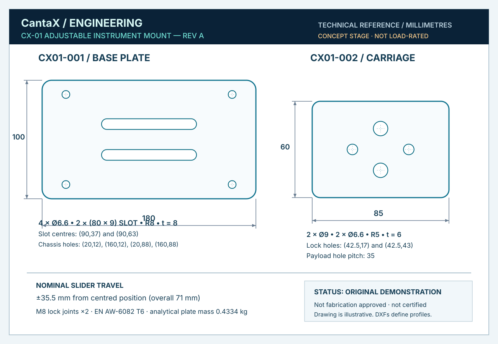

Adjustment in one axis.
Clarity in every file.
CX-01 is an original two-plate instrument-mount fixture concept. Explore its geometry, dimensions, manufacturing profiles and bill of materials — all openly available for technical review.
A straightforward part.
A complete thought process.
A machine builder needs to align an instrument along one axis without redesigning the mount. Two slotted locking positions and a separate carriage provide a nominal 71 mm total adjustment window.
Two parts. One defined motion.
This is a nominal geometry demonstration, not proof of mechanical strength or fit for a specific machine.
- Base plate
- 180 × 100 × 8 mm
- Slider carriage
- 85 × 60 × 6 mm
- Nominal travel
- ±35.5 mm
- Materials (proposed)
- EN AW-6082 T6
- Analytical plate mass
- 0.4334 kg, no hardware
- Hardware (indicative)
- 2 × M8 locking joints
Inspect the files.
Not just the image.
These are actual source and profile files supplied for review. The CAD source is editable in free software. No STEP file or engineering certification is claimed.


Geometry, not
unearned certainty.
Nominal hole alignment, slot bounds, travel clearance and analytical material volume are documented. A reproducible check script is included.
Before a real production order
- Review CAD geometry and fit using the chosen manufacturing process.
- Confirm external fastener-head envelopes, torques and washer selection.
- Agree dimensional tolerances, finish, tolerancing scheme and inspection plan.
- Calculate loads, stiffness, vibration and safe use for the real application.
- Prototype and test before any safety-related installation.
Need a similar design package?
Let's scope the requirements.
Share a short nonconfidential description, target geometry and desired file formats. The studio will review fit and scope before any proposal.